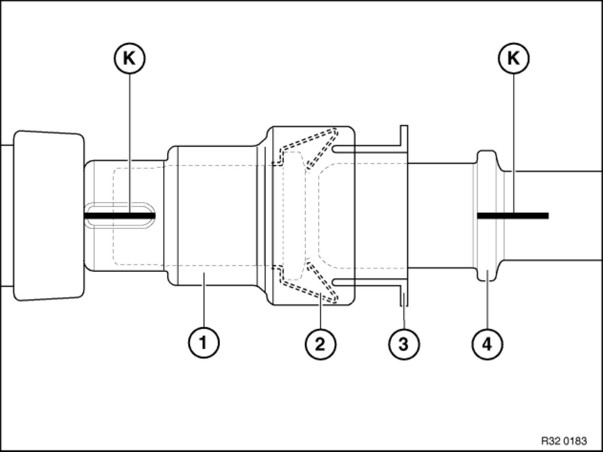
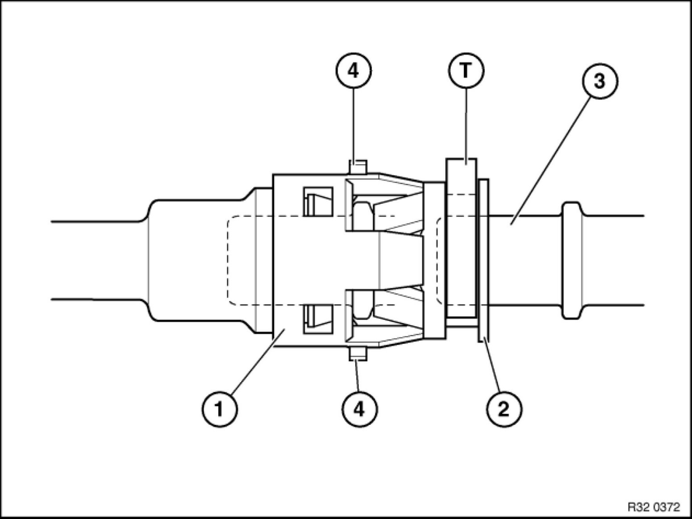

Notes on Hydraulic Line with Quick-Connect Coupling
32 41 ... - Notes on hydraulic line with quick-connect coupling
1) Quick-connect coupling with ID marking

Removing:
Push quick-connect coupling (1) against pipe (4) (thereby relieving strain on spring (2)).
Press plastic ring (3) into quick-connect coupling (1) and remove coupling (1).
Assembly:
Markings (K) on coupling (1) and pipe (4) must be flush.
Push quick-connect coupling (1) onto pipe (4) until a "click" can clearly be heard.
To check that quick-connect coupling (1) has been installed correctly, pull it back forcefully.
2) Quick-connect coupling with indication pins

Removing:
Press plastic ring (2) into quick-connect coupling (1) and remove coupling (1).
Assembly:
When replacing hydraulic line: remove transportation lock (T).
Push quick-connect coupling (1) onto pipe (3) until both indication pins (4) can be seen and felt to point outwards at outside diameter of housing.
To check that quick-connect coupling (1) has been correctly fitted, feel indication pins (4) at outside diameter of housing. When correctly seated, indication pins (4) cannot be pressed into housing.
Important!
Coupling is not correctly engaged if both indication pins (4) fail to protrude from housing. Leakage is thus unavoidable.